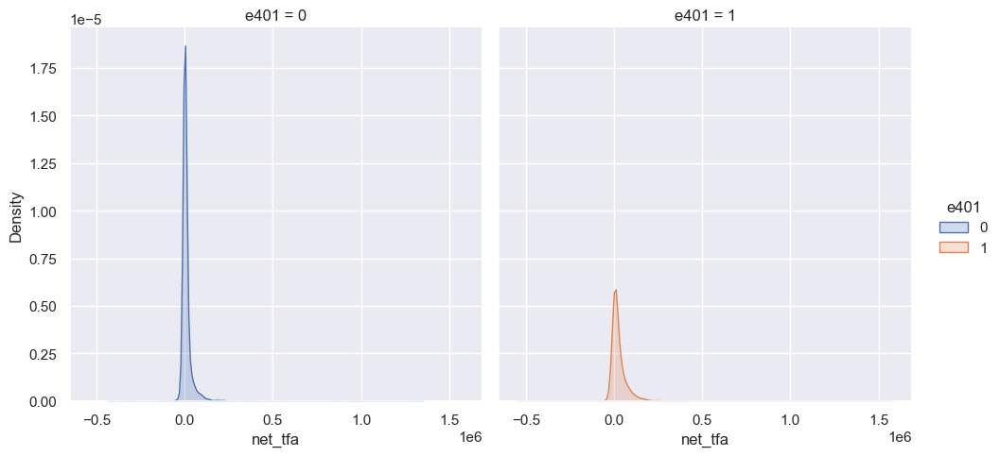

Chapter 16 Inference on Predictive and Causal Effects in High-Dimensional Nonlinear Models
16.1 Impact of 401(k) on Financial Wealth
As a practical illustration of the methods developed in this lecture, we consider estimation of the effect of 401(k) eligibility and participation
One can argue that eligibility for enrolling in a 401(k) plan in this data can be taken as exogenous after conditioning on a few observables of which the most important for their argument is income. The basic idea is that, at least around the time 401(k)’s initially became available, people were unlikely to be basing their employment decisions on whether an employer offered a 401(k) but would instead focus on income and other aspects of the job.
16.1.1 Data
The data set can be loaded from the hdm package for R and hdmpy for Python by typing
library(hdm)
library(ggplot2)
data(pension)
data <- pension
dim(data)## [1] 9915 44
import numpy as np
import pandas as pd
from doubleml.datasets import fetch_401K
from sklearn.preprocessing import PolynomialFeatures
import matplotlib.pyplot as plt
import seaborn as sns
import hdmpy
import pyreadr
import urllib.request
import os
import warnings
warnings.filterwarnings("ignore")
rdata_read = pyreadr.read_r("./data/pension.Rdata")
# Extracting the data frame from rdata_read
data = rdata_read[ 'pension' ]
pension = data.copy()
data.shape## (9915, 44)See the “Details” section on the description of the data set, which can be accessed by
help(pension)
os.system("start \"\" https://search.r-project.org/CRAN/refmans/hdm/html/pension.html")## 0The data consist of 9,915 observations at the household level drawn from the 1991 Survey of Income and Program Participation (SIPP). All the variables are referred to 1990. We use net financial assets (net_tfa) as the outcome variable, \(Y\), in our analysis. The net financial assets are computed as the sum of IRA balances, 401(k) balances, checking accounts, saving bonds, other interest-earning accounts, other interest-earning assets, stocks, and mutual funds less non mortgage debts.
Among the \(9915\) individuals, \(3682\) are eligible to participate in the program. The variable e401 indicates eligibility and p401 indicates participation, respectively.
hist_e401 = ggplot(data, aes(x = e401, fill = factor(e401))) +
geom_bar()
hist_e401
sns.set()
colors = sns.color_palette()
sns.countplot(x="e401", hue = "e401" , data=data)
Eligibility is highly associated with financial wealth:
dens_net_tfa = ggplot(data, aes(x = net_tfa, color = factor(e401), fill = factor(e401)) ) +
geom_density() + xlim(c(-20000, 150000)) +
facet_wrap(.~e401)
dens_net_tfa
from matplotlib.pyplot import figure
figure(figsize=(8, 10), dpi=100)sns.displot(data, x="net_tfa", hue="e401", col="e401",
kind="kde", fill=True)
The unconditional APE of e401 is about \(19559\):
e1 <- data[data$e401==1,]
e0 <- data[data$e401==0,]
round(mean(e1$net_tfa)-mean(e0$net_tfa),0)## [1] 19559
int(np.round( data[['e401', 'net_tfa']].groupby('e401').mean().diff().iloc[1, 0] ) )## 19559Among the \(3682\) individuals that are eligible, \(2594\) decided to participate in the program. The unconditional APE of p401 is about \(27372\):
p1 <- data[data$p401==1,]
p0 <- data[data$p401==0,]
round(mean(p1$net_tfa)-mean(p0$net_tfa),0)## [1] 27372
int(np.round( data[['p401', 'net_tfa']].groupby('p401').mean().diff().iloc[1, 0]))## 27372As discussed, these estimates are biased since they do not account for saver heterogeneity and endogeneity of participation.
16.2 Double ML package
We are interested in valid estimators of the average treatment effect of e401 and p401 on net_tfa. To get those estimators, we use the DoubleML package that internally builds on mlr3. You find additional information on the package on the package website https://docs.doubleml.org/ and the R documentation page https://docs.doubleml.org/r/stable/.
# installing Double ML
#remotes::install_github("DoubleML/doubleml-for-r",quiet=TRUE)
# loading the packages
library(DoubleML)
library(mlr3learners)
library(mlr3)
library(data.table)
library(randomForest)
import doubleml as dml
from sklearn.linear_model import LassoCV, LogisticRegressionCV
from sklearn.ensemble import RandomForestClassifier, RandomForestRegressor
from sklearn.tree import DecisionTreeClassifier, DecisionTreeRegressor
from sklearn.preprocessing import StandardScaler
from sklearn.pipeline import make_pipeline
from xgboost import XGBClassifier, XGBRegressorAs mentioned, in the tutorial we use the meta package mlr3 to generate predictions with machine learning methods. A comprehensive introduction and description of the mlr3 package is provided in the mlr3book. A list of all learners that you can use in mlr3 can be found here. The entry in the columns mlr3 Package and Packages indicate which packages must be installed/loaded in your R session.
16.3 Estimating the ATE of 401(k) Eligibility on Net Financial Assets
We first look at the treatment effect of e401 on net total financial assets. We give estimates of the ATE and ATT that corresponds to the linear model
\[\begin{equation*} Y = D \alpha + f(X)'\beta+ \epsilon, \end{equation*}\]
where \(f(X)\) includes indicators of marital status, two-earner status, defined benefit pension status, IRA participation status, and home ownership status, and orthogonal polynomials of degrees 2, 4, 6 and 8 in family size, education, age and income, respectively. The dimensions of \(f(X)\) is 25.
In the first step, we report estimates of the average treatment effect (ATE) of 401(k) eligibility on net financial assets both in the partially linear regression (PLR) model and in the interactive regression model (IRM) allowing for heterogeneous treatment effects.
I decided to low down the degree of the income variable from 8 to 6 since sklearn has some problems with values greater than float32. I can not use np.log in inc variable since it has negative values. As a result, we got a column with some None values. For more information about this problem, check this link.
# Constructing the data (as DoubleMLData)
formula_flex = "net_tfa ~ e401 + poly(age, 6, raw=TRUE) + poly(inc, 6, raw=TRUE) + poly(educ, 4, raw=TRUE) + poly(fsize, 2, raw=TRUE) + marr + twoearn + db + pira + hown"
model_flex = as.data.table(model.frame(formula_flex, pension))
x_cols = colnames(model_flex)[-c(1,2)]
data_ml_aux = DoubleMLData$new(model_flex,
y_col = "net_tfa",
d_cols = "e401",
x_cols=x_cols)
p <- dim(model_flex)[2]-2
p## [1] 23# complex model with two-way interactions
#data_interactions = fetch_401k(polynomial_features = TRUE, instrument = FALSE)
# Constructing the data (as DoubleMLData)
features = data.copy()[['marr', 'twoearn', 'db', 'pira', 'hown']]
poly_dict = {'age': 6,
'inc': 6,
'educ': 4,
'fsize': 2}
for key, degree in poly_dict.items():
poly = PolynomialFeatures(degree, include_bias=False)
data_transf = poly.fit_transform(data[[key]])
x_cols = poly.get_feature_names([key])
data_transf = pd.DataFrame(data_transf, columns=x_cols)
features = pd.concat((features, data_transf),
axis=1, sort=False)
model_flex = pd.concat((data.copy()[['net_tfa', 'e401']], features.copy()),
axis=1, sort=False)
x_cols = model_flex.columns.to_list()[2:]
# Initialize DoubleMLData (data-backend of DoubleML)
data_ml_aux = dml.DoubleMLData(model_flex, y_col='net_tfa', \
d_cols ='e401' , x_cols = x_cols)
# complex model with two-way interactions
# data_interactions
# fetch_401K( return_type = 'DataFrame' , polynomial_features = True )
p = model_flex.shape[1] - 2
print(p)## 23p = model_flex.shape[1] - 2
print(p)## 2316.4 Partially Linear Regression Models (PLR)
We start using lasso to estimate the function \(g_0\) and \(m_0\) in the following PLR model:
\[\begin{eqnarray} & Y = D\theta_0 + g_0(X) + \zeta, & E[\zeta \mid D,X]= 0,\\ & D = m_0(X) + V, & E[V \mid X] = 0. \end{eqnarray}\]
# Estimating the PLR
lgr::get_logger("mlr3")$set_threshold("warn")
set.seed(123)
lasso <- lrn("regr.cv_glmnet",nfolds = 5, s = "lambda.min")
lasso_class <- lrn("classif.cv_glmnet", nfolds = 5, s = "lambda.min")
dml_plr <- DoubleMLPLR$new(data_ml_aux, ml_g = lasso, ml_m = lasso_class, n_folds=3)
dml_plr$fit(store_predictions=TRUE)
dml_plr$summary()## [1] "Estimates and significance testing of the effect of target variables"
## Estimate. Std. Error t value Pr(>|t|)
## e401 8952 1269 7.057 1.7e-12 ***
## ---
## Signif. codes: 0 '***' 0.001 '**' 0.01 '*' 0.05 '.' 0.1 ' ' 1lasso_plr <- dml_plr$coef
lasso_std_plr <- dml_plr$se
# Estimating the PLR
# Initialize learners
Cs = 0.0001*np.logspace(0, 4, 10)
lasso = make_pipeline(StandardScaler(), LassoCV(cv=5, max_iter=10000))
lasso_class = make_pipeline(StandardScaler(),
LogisticRegressionCV(cv=5, penalty='l1', solver='liblinear',
Cs = Cs, max_iter=1000))
np.random.seed(123)
# Initialize DoubleMLPLR model
dml_plr = dml.DoubleMLPLR(data_ml_aux,
ml_g = lasso,
ml_m = lasso_class,
n_folds = 3)
dml_plr.fit(store_predictions=True)## <doubleml.double_ml_plr.DoubleMLPLR object at 0x00000000245CEAF0>lasso_plr = dml_plr.summary.coef[0]
lasso_std_plr = dml_plr.summary['std err'][0]
dml_plr.summary## coef std err ... 2.5 % 97.5 %
## e401 8919.577401 1325.857662 ... 6320.944135 11518.210667
##
## [1 rows x 6 columns]Let us check the predictive performance of this model.
dml_plr$params_names()## [1] "ml_g" "ml_m"g_hat <- as.matrix(dml_plr$predictions$ml_g) # predictions of g_o
m_hat <- as.matrix(dml_plr$predictions$ml_m) # predictions of m_o
g_hat = dml_plr.predictions['ml_g'].flatten() # predictions of g_o
m_hat = dml_plr.predictions['ml_m'].flatten() # predictions of m_o
print(dml_plr.params_names)## ['ml_g', 'ml_m']# cross-fitted RMSE: outcome
y <- as.matrix(pension$net_tfa) # true observations
theta <- as.numeric(dml_plr$coef) # estimated regression coefficient
d <- as.matrix(pension$e401)
predictions_y <- as.matrix(d*theta)+g_hat # predictions for y
lasso_y_rmse <- sqrt(mean((y-predictions_y)^2))
lasso_y_rmse## [1] 53735.74
# cross-fitted RMSE: outcome
y = pension.net_tfa.to_numpy() # true observations
theta = dml_plr.coef[ 0 ] # estimated regression coefficient
d = pension.e401.to_numpy()
predictions_y = d*theta + g_hat # predictions for y
lasso_y_rmse = np.sqrt( np.mean( ( y - predictions_y ) ** 2 ) )
lasso_y_rmse## 54342.024308477914# cross-fitted RMSE: treatment
d <- as.matrix(pension$e401)
lasso_d_rmse <- sqrt(mean((d-m_hat)^2))
lasso_d_rmse## [1] 0.4443213# cross-fitted ce: treatment
mean(ifelse(m_hat > 0.5, 1, 0) != d)## [1] 0.3167927
# cross-fitted RMSE: treatment
d = pension.e401.to_numpy()
lasso_d_rmse = np.sqrt( np.mean( ( d - m_hat ) ** 2 ) )
print( lasso_d_rmse )
# cross-fitted ce: treatment## 0.4585164421000309print(np.mean( ( m_hat > 0.5 ) * 1 != d ))## 0.31376701966717097Then, we repeat this procedure for various machine learning methods.
# Random Forest
lgr::get_logger("mlr3")$set_threshold("warn")
randomForest <- lrn("regr.ranger")
randomForest_class <- lrn("classif.ranger")
dml_plr <- DoubleMLPLR$new(data_ml_aux,
ml_g = randomForest,
ml_m = randomForest_class,
n_folds=3)
dml_plr$fit(store_predictions=TRUE) # set store_predictions=TRUE to evaluate the model
forest_plr <- dml_plr$coef
forest_std_plr <- dml_plr$se
dml_plr$summary()## [1] "Estimates and significance testing of the effect of target variables"
## Estimate. Std. Error t value Pr(>|t|)
## e401 8359 1267 6.599 4.14e-11 ***
## ---
## Signif. codes: 0 '***' 0.001 '**' 0.01 '*' 0.05 '.' 0.1 ' ' 1
# Random Forest
randomForest = RandomForestRegressor(
n_estimators = 500 )
randomForest_class = RandomForestClassifier(
n_estimators = 500 )
dml_plr = dml.DoubleMLPLR(data_ml_aux, ml_g = randomForest, \
ml_m = randomForest_class, n_folds = 3)
dml_plr.fit(store_predictions=True) # set store_predictions=TRUE to evaluate the model## <doubleml.double_ml_plr.DoubleMLPLR object at 0x0000000064929BE0>forest_plr = dml_plr.coef
forest_std_plr = dml_plr.summary[ 'std err' ]
dml_plr.summary## coef std err ... 2.5 % 97.5 %
## e401 8702.588054 1310.423641 ... 6134.204913 11270.971196
##
## [1 rows x 6 columns]We can compare the accuracy of this model to the model that has been estimated with lasso.
# Evaluation predictions
g_hat <- as.matrix(dml_plr$predictions$ml_g) # predictions of g_o
m_hat <- as.matrix(dml_plr$predictions$ml_m) # predictions of m_o
theta <- as.numeric(dml_plr$coef) # estimated regression coefficient
predictions_y <- as.matrix(d*theta)+g_hat # predictions for y
forest_y_rmse <- sqrt(mean((y-predictions_y)^2))
# cross-fitted RMSE: treatment
forest_d_rmse <- sqrt(mean((d-m_hat)^2))
#### Results
forest_y_rmse## [1] 56078.76forest_d_rmse## [1] 0.4558187# cross-fitted ce: treatment
mean(ifelse(m_hat > 0.5, 1, 0) != d)## [1] 0.3324256
# Evaluation predictions
g_hat = dml_plr.predictions['ml_g'].flatten() # predictions of g_o
m_hat = dml_plr.predictions['ml_m'].flatten() # predictions of m_o
y = pension.net_tfa.to_numpy()
theta = dml_plr.coef[ 0 ] # estimated regression coefficient
predictions_y = d*theta + g_hat # predictions for y
forest_y_rmse = np.sqrt( np.mean( ( y - predictions_y ) ** 2 ) )
# cross-fitted RMSE: treatment
forest_d_rmse = np.sqrt( np.mean( ( d - m_hat ) ** 2 ) )
#### Results
print( forest_y_rmse )## 58456.527347918534print( forest_d_rmse )
# cross-fitted ce: treatment## 0.4659644938522823np.mean( ( m_hat > 0.5 ) * 1 != d )## 0.3495713565305093# Trees
lgr::get_logger("mlr3")$set_threshold("warn")
trees <- lrn("regr.rpart")
trees_class <- lrn("classif.rpart")
dml_plr <- DoubleMLPLR$new(data_ml_aux, ml_g = trees, ml_m = trees_class, n_folds=3)
dml_plr$fit(store_predictions=TRUE)
dml_plr$summary()## [1] "Estimates and significance testing of the effect of target variables"
## Estimate. Std. Error t value Pr(>|t|)
## e401 8835 1317 6.708 1.98e-11 ***
## ---
## Signif. codes: 0 '***' 0.001 '**' 0.01 '*' 0.05 '.' 0.1 ' ' 1tree_plr <- dml_plr$coef
tree_std_plr <- dml_plr$se
# Evaluation predictions
g_hat <- as.matrix(dml_plr$predictions$ml_g) # predictions of g_o
m_hat <- as.matrix(dml_plr$predictions$ml_m) # predictions of m_o
theta <- as.numeric(dml_plr$coef) # estimated regression coefficient
predictions_y <- as.matrix(d*theta)+g_hat # predictions for y
tree_y_rmse <- sqrt(mean((y-predictions_y)^2))
tree_y_rmse## [1] 56708.52# cross-fitted RMSE: treatment
tree_d_rmse <- sqrt(mean((d-m_hat)^2))
tree_d_rmse## [1] 0.4553888# cross-fitted ce: treatment
mean(ifelse(m_hat > 0.5, 1, 0) != d)## [1] 0.3136662
# Trees
trees = DecisionTreeRegressor(
max_depth=30, ccp_alpha=0.01, min_samples_split=20, \
min_samples_leaf= np.round(20/3).astype(int))
trees_class = DecisionTreeClassifier( max_depth=30, ccp_alpha=0.01, \
min_samples_split=20, \
min_samples_leaf= np.round(20/3).astype(int) )
np.random.seed(123)
dml_plr = dml.DoubleMLPLR(data_ml_aux,
ml_g = trees,
ml_m = trees_class,
n_folds = 3)
dml_plr.fit(store_predictions=True)## <doubleml.double_ml_plr.DoubleMLPLR object at 0x00000000C4DD61F0>tree_summary = dml_plr.summary
print(tree_summary)## coef std err ... 2.5 % 97.5 %
## e401 8594.661891 1383.808638 ... 5882.446799 11306.876983
##
## [1 rows x 6 columns]dml_plr.fit(store_predictions=True)## <doubleml.double_ml_plr.DoubleMLPLR object at 0x00000000C4DD61F0>dml_plr.summary## coef std err ... 2.5 % 97.5 %
## e401 8601.584926 1383.825475 ... 5889.336834 11313.833019
##
## [1 rows x 6 columns]tree_plr = dml_plr.coef
tree_std_plr = dml_plr.summary[ 'std err' ]
# Evaluation predictions
g_hat = dml_plr.predictions['ml_g'].flatten() # predictions of g_o
m_hat = dml_plr.predictions['ml_m'].flatten() # predictions of m_o
y = pension.net_tfa.to_numpy()
theta = dml_plr.coef[ 0 ] # estimated regression coefficient
predictions_y = d*theta + g_hat # predictions for y
tree_y_rmse = np.sqrt( np.mean( ( y - predictions_y ) ** 2 ) )
print( tree_y_rmse )
# cross-fitted RMSE: treatment## 58017.721042321384tree_d_rmse = np.sqrt( np.mean( ( d - m_hat ) ** 2 ) )
print( tree_d_rmse )
# cross-fitted ce: treatment## 0.4546690531536573np.mean( ( m_hat > 0.5 ) * 1 != d )## 0.35269793242561776# Boosting
lgr::get_logger("mlr3")$set_threshold("warn")
boost<- lrn("regr.xgboost",objective="reg:squarederror")
boost_class <- lrn("classif.xgboost",objective = "binary:logistic",eval_metric ="logloss")
dml_plr <- DoubleMLPLR$new(data_ml_aux, ml_g = boost, ml_m = boost_class, n_folds=3)
dml_plr$fit(store_predictions=TRUE)
dml_plr$summary()## [1] "Estimates and significance testing of the effect of target variables"
## Estimate. Std. Error t value Pr(>|t|)
## e401 8867 1342 6.606 3.95e-11 ***
## ---
## Signif. codes: 0 '***' 0.001 '**' 0.01 '*' 0.05 '.' 0.1 ' ' 1boost_plr <- dml_plr$coef
boost_std_plr <- dml_plr$se
# Evaluation predictions
g_hat <- as.matrix(dml_plr$predictions$ml_g) # predictions of g_o
m_hat <- as.matrix(dml_plr$predictions$ml_m) # predictions of m_o
theta <- as.numeric(dml_plr$coef) # estimated regression coefficient
predictions_y <- as.matrix(d*theta)+g_hat # predictions for y
boost_y_rmse <- sqrt(mean((y-predictions_y)^2))
boost_y_rmse## [1] 59816.19# cross-fitted RMSE: treatment
boost_d_rmse <- sqrt(mean((d-m_hat)^2))
boost_d_rmse## [1] 0.4726804# cross-fitted ce: treatment
mean(ifelse(m_hat > 0.5, 1, 0) != d)## [1] 0.3237519
# Boosted Trees
boost = XGBRegressor(n_jobs=1, objective = "reg:squarederror" )
boost_class = XGBClassifier(use_label_encoder=False, n_jobs=1,
objective = "binary:logistic", \
eval_metric = "logloss" )
np.random.seed(123)
dml_plr = dml.DoubleMLPLR( data_ml_aux ,
ml_g = boost,
ml_m = boost_class,
n_folds = 3)
dml_plr.fit(store_predictions=True)## <doubleml.double_ml_plr.DoubleMLPLR object at 0x00000000C4DC2160>boost_summary = dml_plr.summary
print( boost_summary )## coef std err ... 2.5 % 97.5 %
## e401 9129.263678 1471.781415 ... 6244.625111 12013.902244
##
## [1 rows x 6 columns]boost_plr = dml_plr.coef
boost_std_plr = dml_plr.summary[ 'std err' ]
# Evaluation predictions
g_hat = dml_plr.predictions['ml_g'].flatten() # predictions of g_o
m_hat = dml_plr.predictions['ml_m'].flatten() # predictions of m_o
y = pension.net_tfa.to_numpy()
theta = dml_plr.coef[ 0 ] # estimated regression coefficient
predictions_y = d*theta + g_hat # predictions for y
boost_y_rmse = np.sqrt( np.mean( ( y - predictions_y ) ** 2 ) )
print( boost_y_rmse )
# cross-fitted RMSE: treatment## 62126.68237198471boost_d_rmse = np.sqrt( np.mean( ( d - m_hat ) ** 2 ) )
print( boost_d_rmse )
# cross-fitted ce: treatment## 0.4629817464588606np.mean( ( m_hat > 0.5 ) * 1 != d )## 0.33605648008068584Let’s sum up the results:
library(xtable)
table <- matrix(0, 4, 4)
table[1,1:4] <- c(lasso_plr,forest_plr,tree_plr,boost_plr)
table[2,1:4] <- c(lasso_std_plr,forest_std_plr,tree_std_plr,boost_std_plr)
table[3,1:4] <- c(lasso_y_rmse,forest_y_rmse,tree_y_rmse,boost_y_rmse)
table[4,1:4] <- c(lasso_d_rmse,forest_d_rmse,tree_d_rmse,boost_d_rmse)
rownames(table) <- c("Estimate","Std.Error","RMSE Y","RMSE D")
colnames(table) <- c("Lasso","Random Forest","Trees","Boosting")
tab<- xtable(table, digits = 2)
tab## % latex table generated in R 4.0.4 by xtable 1.8-4 package
## % Wed Nov 24 15:05:32 2021
## \begin{table}[ht]
## \centering
## \begin{tabular}{rrrrr}
## \hline
## & Lasso & Random Forest & Trees & Boosting \\
## \hline
## Estimate & 8952.25 & 8359.37 & 8834.64 & 8867.42 \\
## Std.Error & 1268.61 & 1266.75 & 1317.08 & 1342.33 \\
## RMSE Y & 53735.74 & 56078.76 & 56708.52 & 59816.19 \\
## RMSE D & 0.44 & 0.46 & 0.46 & 0.47 \\
## \hline
## \end{tabular}
## \end{table}
table = np.zeros( (4, 4) )
table[0,0:4] = lasso_plr,forest_plr[0],tree_plr[0],boost_plr[0]
table[1,0:4] = lasso_std_plr,forest_std_plr,tree_std_plr,boost_std_plr
table[2,0:4] = lasso_y_rmse,forest_y_rmse,tree_y_rmse,boost_y_rmse
table[3,0:4] = lasso_d_rmse,forest_d_rmse,tree_d_rmse,boost_d_rmse
table_pd = pd.DataFrame( table , index = ["Estimate","Std.Error","RMSE Y","RMSE D" ], \
columns = [ "Lasso","Random Forest","Trees","Boosting"])
table_pd.to_latex()## '\\begin{tabular}{lrrrr}\n\\toprule\n{} & Lasso & Random Forest & Trees & Boosting \\\\\n\\midrule\nEstimate & 8919.577401 & 8702.588054 & 8601.584926 & 9129.263678 \\\\\nStd.Error & 1325.857662 & 1310.423641 & 1383.825475 & 1471.781415 \\\\\nRMSE Y & 54342.024308 & 58456.527348 & 58017.721042 & 62126.682372 \\\\\nRMSE D & 0.458516 & 0.465964 & 0.454669 & 0.462982 \\\\\n\\bottomrule\n\\end{tabular}\n'The best model with lowest RMSE in both equation is the PLR model estimated via lasso. It gives the following estimate:
lasso_plr## e401
## 8952.253
lasso_plr## 8919.57740123115216.5 Interactive Regression Model (IRM)
Next, we consider estimation of average treatment effects when treatment effects are fully heterogeneous:
\[\begin{eqnarray}\label{eq: HetPL1} & Y = g_0(D, X) + U, & \quad E[U \mid X, D]= 0,\\ & D = m_0(X) + V, & \quad E[V\mid X] = 0. \end{eqnarray}\]
To reduce the disproportionate impact of extreme propensity score weights in the interactive model we trim the propensity scores which are close to the bounds.
set.seed(123)
lgr::get_logger("mlr3")$set_threshold("warn")
dml_irm = DoubleMLIRM$new(data_ml_aux,
ml_g = lasso,
ml_m = lasso_class,
trimming_threshold = 0.01,
n_folds=3)
dml_irm$fit(store_predictions=TRUE)
dml_irm$summary()## [1] "Estimates and significance testing of the effect of target variables"
## Estimate. Std. Error t value Pr(>|t|)
## e401 7941 1106 7.177 7.15e-13 ***
## ---
## Signif. codes: 0 '***' 0.001 '**' 0.01 '*' 0.05 '.' 0.1 ' ' 1lasso_irm <- dml_irm$coef
lasso_std_irm <- dml_irm$se
# predictions
dml_irm$params_names()## [1] "ml_g0" "ml_g1" "ml_m"g0_hat <- as.matrix(dml_irm$predictions$ml_g0) # predictions of g_0(D=0, X)
g1_hat <- as.matrix(dml_irm$predictions$ml_g1) # predictions of g_0(D=1, X)
g_hat <- d*g1_hat+(1-d)*g0_hat # predictions of g_0
m_hat <- as.matrix(dml_irm$predictions$ml_m) # predictions of m_o
# Lasso
lasso = make_pipeline(StandardScaler(), LassoCV(cv=5, max_iter=20000))
# Initialize DoubleMLIRM model
np.random.seed(123)
dml_irm = dml.DoubleMLIRM(data_ml_aux, ml_g = lasso, ml_m = lasso_class, trimming_threshold = 0.01, n_folds = 3)
dml_irm.fit(store_predictions=True)## <doubleml.double_ml_irm.DoubleMLIRM object at 0x00000000C4DCA070>lasso_summary = dml_irm.summary
print(dml_irm.summary)## coef std err ... 2.5 % 97.5 %
## e401 8089.763322 1270.047728 ... 5600.515516 10579.011127
##
## [1 rows x 6 columns]lasso_irm = dml_irm.coef[0]
lasso_std_irm = dml_irm.se[0]
# predictions
print(dml_irm.params_names)## ['ml_g0', 'ml_g1', 'ml_m']g0_hat = dml_irm.predictions['ml_g0'].flatten() # predictions of g_0(D=0, X)
g1_hat = dml_irm.predictions['ml_g1'].flatten() # predictions of g_0(D=1, X)
g_hat = d * g1_hat + ( 1 - d )*g0_hat # predictions of g_0
m_hat = dml_irm.predictions['ml_m'].flatten() # predictions of m_o# cross-fitted RMSE: outcome
y <- as.matrix(pension$net_tfa) # true observations
d <- as.matrix(pension$e401)
lasso_y_irm <- sqrt(mean((y-g_hat)^2))
lasso_y_irm## [1] 55439.51# cross-fitted RMSE: treatment
lasso_d_irm <- sqrt(mean((d-m_hat)^2))
lasso_d_irm## [1] 0.4440579# cross-fitted ce: treatment
mean(ifelse(m_hat > 0.5, 1, 0) != d)## [1] 0.3153807
# cross-fitted RMSE: outcome
y = pension.net_tfa.to_numpy() # true observations
d = pension.e401.to_numpy()
lasso_y_irm = np.sqrt( np.mean( ( y - g_hat ) ** 2 ) )
print(lasso_y_irm)
# cross-fitted RMSE: treatment## 54497.27607070185lasso_d_irm = np.sqrt( np.mean( ( d - m_hat ) ** 2 ) )
print( lasso_d_irm )
# cross-fitted ce: treatment## 0.45851619758764794np.mean( ( m_hat > 0.5 ) * 1 != d ) ## 0.31376701966717097##### forest #####
dml_irm = DoubleMLIRM$new(data_ml_aux,
ml_g = randomForest,
ml_m = randomForest_class,
trimming_threshold = 0.01,
n_folds=3)
dml_irm$fit(store_predictions=TRUE)
#Summary
dml_irm$summary()## [1] "Estimates and significance testing of the effect of target variables"
## Estimate. Std. Error t value Pr(>|t|)
## e401 7809 1311 5.955 2.6e-09 ***
## ---
## Signif. codes: 0 '***' 0.001 '**' 0.01 '*' 0.05 '.' 0.1 ' ' 1forest_irm <- dml_irm$coef
forest_std_irm <- dml_plr$se
# predictions
g0_hat <- as.matrix(dml_irm$predictions$ml_g0) # predictions of g_0(D=0, X)
g1_hat <- as.matrix(dml_irm$predictions$ml_g1) # predictions of g_0(D=1, X)
g_hat <- d*g1_hat+(1-d)*g0_hat # predictions of g_0
m_hat <- as.matrix(dml_irm$predictions$ml_m) # predictions of m_o
# cross-fitted RMSE: outcome
y <- as.matrix(pension$net_tfa) # true observations
d <- as.matrix(pension$e401)
forest_y_irm <- sqrt(mean((y-g_hat)^2))
forest_y_irm## [1] 55502.95# cross-fitted RMSE: treatment
forest_d_irm <- sqrt(mean((d-m_hat)^2))
forest_d_irm## [1] 0.4559869# cross-fitted ce: treatment
mean(ifelse(m_hat > 0.5, 1, 0) != d)## [1] 0.3290973##### trees #####
dml_irm <- DoubleMLIRM$new(data_ml_aux,
ml_g = trees,
ml_m = trees_class,
trimming_threshold = 0.01,
n_folds=3)
dml_irm$fit(store_predictions=TRUE)
dml_irm$summary()## [1] "Estimates and significance testing of the effect of target variables"
## Estimate. Std. Error t value Pr(>|t|)
## e401 7477 1187 6.3 2.97e-10 ***
## ---
## Signif. codes: 0 '***' 0.001 '**' 0.01 '*' 0.05 '.' 0.1 ' ' 1tree_irm <- dml_irm$coef
tree_std_irm <- dml_irm$se
# predictions
g0_hat <- as.matrix(dml_irm$predictions$ml_g0) # predictions of g_0(D=0, X)
g1_hat <- as.matrix(dml_irm$predictions$ml_g1) # predictions of g_0(D=1, X)
g_hat <- d*g1_hat+(1-d)*g0_hat # predictions of g_0
m_hat <- as.matrix(dml_irm$predictions$ml_m) # predictions of m_o
# cross-fitted RMSE: outcome
y <- as.matrix(pension$net_tfa) # true observations
d <- as.matrix(pension$e401)
tree_y_irm <- sqrt(mean((y-g_hat)^2))
tree_y_irm## [1] 57305.26# cross-fitted RMSE: treatment
tree_d_irm <- sqrt(mean((d-m_hat)^2))
tree_d_irm## [1] 0.455894# cross-fitted ce: treatment
mean(ifelse(m_hat > 0.5, 1, 0) != d)## [1] 0.3135653##### boosting #####
dml_irm <- DoubleMLIRM$new(data_ml_aux,
ml_g = boost,
ml_m = boost_class,
trimming_threshold = 0.01,
n_folds=3)
dml_irm$fit(store_predictions=TRUE)
dml_irm$summary()## [1] "Estimates and significance testing of the effect of target variables"
## Estimate. Std. Error t value Pr(>|t|)
## e401 8353 1228 6.803 1.03e-11 ***
## ---
## Signif. codes: 0 '***' 0.001 '**' 0.01 '*' 0.05 '.' 0.1 ' ' 1boost_irm <- dml_irm$coef
boost_std_irm <- dml_irm$se
# predictions
g0_hat <- as.matrix(dml_irm$predictions$ml_g0) # predictions of g_0(D=0, X)
g1_hat <- as.matrix(dml_irm$predictions$ml_g1) # predictions of g_0(D=1, X)
g_hat <- d*g1_hat+(1-d)*g0_hat # predictions of g_0
m_hat <- as.matrix(dml_irm$predictions$ml_m) # predictions of m_o
# cross-fitted RMSE: outcome
y <- as.matrix(pension$net_tfa) # true observations
d <- as.matrix(pension$e401)
boost_y_irm <- sqrt(mean((y-g_hat)^2))
boost_y_irm## [1] 61055.91# cross-fitted RMSE: treatment
boost_d_irm <- sqrt(mean((d-m_hat)^2))
boost_d_irm## [1] 0.4732346# cross-fitted ce: treatment
mean(ifelse(m_hat > 0.5, 1, 0) != d)## [1] 0.3234493
##### forest #####
randomForest = RandomForestRegressor(n_estimators=500)
randomForest_class = RandomForestClassifier(n_estimators=500)
np.random.seed(123)
dml_irm = dml.DoubleMLIRM(data_ml_aux,
ml_g = randomForest,
ml_m = randomForest_class,
trimming_threshold = 0.01,
n_folds = 3)
dml_irm.fit( store_predictions = True ) ## <doubleml.double_ml_irm.DoubleMLIRM object at 0x0000000064929A30>print( dml_irm.summary )## coef std err ... 2.5 % 97.5 %
## e401 8429.821206 1521.201806 ... 5448.320453 11411.32196
##
## [1 rows x 6 columns]forest_irm = dml_irm.coef[ 0 ]
forest_std_irm = dml_irm.se[ 0 ]
# predictions
g0_hat = dml_irm.predictions['ml_g0'].flatten() # predictions of g_0(D=0, X)
g1_hat = dml_irm.predictions['ml_g1'].flatten() # predictions of g_0(D=1, X)
g_hat = d * g1_hat + ( 1 - d )*g0_hat # predictions of g_0
m_hat = dml_irm.predictions['ml_m'].flatten() # predictions of m_o
# cross-fitted RMSE: outcome
y = pension.net_tfa.to_numpy()
d = pension.e401.to_numpy()
forest_y_irm = np.sqrt( np.mean( ( y - g_hat ) ** 2 ) )
print( forest_y_irm )
# cross-fitted RMSE: treatment## 56839.92174410771forest_d_irm = np.sqrt( np.mean( ( d - m_hat ) ** 2 ) )
print( forest_d_irm )
# cross-fitted ce: treatment## 0.46312674664653625np.mean( ( m_hat > 0.5 ) * 1 != d )
##### trees ####### 0.33767019667170955trees = DecisionTreeRegressor( max_depth=30, ccp_alpha=0.01, min_samples_split=20, min_samples_leaf=67)
trees_class = DecisionTreeClassifier( max_depth=30, ccp_alpha=0.01, min_samples_split=20, min_samples_leaf=34)
np.random.seed(123)
dml_irm = dml.DoubleMLIRM(data_ml_aux,
ml_g = trees,
ml_m = trees_class,
trimming_threshold = 0.01,
n_folds = 3)
dml_irm.fit( store_predictions = True ) ## <doubleml.double_ml_irm.DoubleMLIRM object at 0x00000000C4DD63D0>print(dml_irm.summary)## coef std err ... 2.5 % 97.5 %
## e401 7462.262513 1171.316712 ... 5166.523942 9758.001083
##
## [1 rows x 6 columns]tree_irm = dml_irm.coef[ 0 ]
tree_std_irm = dml_irm.se[ 0 ]
# predictions
g0_hat = dml_irm.predictions['ml_g0'].flatten() # predictions of g_0(D=0, X)
g1_hat = dml_irm.predictions['ml_g1'].flatten() # predictions of g_0(D=1, X)
g_hat = d * g1_hat + ( 1 - d )*g0_hat # predictions of g_0
m_hat = dml_irm.predictions['ml_m'].flatten() # predictions of m_o
# cross-fitted RMSE: outcome
y = pension.net_tfa.to_numpy()
d = pension.e401.to_numpy()
tree_y_irm = np.sqrt( np.mean( ( y - g_hat ) ** 2 ) )
print( tree_y_irm )
# cross-fitted RMSE: treatment## 56517.04167292204tree_d_irm = np.sqrt( np.mean( ( d - m_hat ) ** 2 ) )
print( tree_d_irm )
# cross-fitted ce: treatment## 0.4546690531536573np.mean( ( m_hat > 0.5 ) * 1 != d )
##### boosting ####### 0.35269793242561776boost = XGBRegressor(n_jobs=1, objective = "reg:squarederror")
boost_class = XGBClassifier(use_label_encoder=False, n_jobs=1,
objective = "binary:logistic",
eval_metric = "logloss")
np.random.seed(123)
dml_irm = dml.DoubleMLIRM(data_ml_aux, ml_g = boost, ml_m = boost_class,
trimming_threshold = 0.01, n_folds = 3)
dml_irm.fit( store_predictions = True ) ## <doubleml.double_ml_irm.DoubleMLIRM object at 0x00000000C4DCA070>print( dml_irm.summary )## coef std err t P>|t| 2.5 % 97.5 %
## e401 9756.926817 2500.320649 3.90227 0.000095 4856.388395 14657.46524boost_irm = dml_irm.coef[ 0 ]
boost_std_irm = dml_irm.se[ 0 ]
# predictions
g0_hat = dml_irm.predictions['ml_g0'].flatten() # predictions of g_0(D=0, X)
g1_hat = dml_irm.predictions['ml_g1'].flatten() # predictions of g_0(D=1, X)
g_hat = d * g1_hat + ( 1 - d )*g0_hat # predictions of g_0
m_hat = dml_irm.predictions['ml_m'].flatten() # predictions of m_o
# cross-fitted RMSE: outcome
y = pension.net_tfa.to_numpy()
d = pension.e401.to_numpy()
boost_y_irm = np.sqrt( np.mean( ( y - g_hat ) ** 2 ) )
print( boost_y_irm )
# cross-fitted RMSE: treatment## 61594.80967416296boost_d_irm = np.sqrt( np.mean( ( d - m_hat ) ** 2 ) )
print( boost_d_irm )
# cross-fitted ce: treatment## 0.46296289075787445np.mean( ( m_hat > 0.5 ) * 1 != d ) ## 0.33605648008068584library(xtable)
table <- matrix(0, 4, 4)
table[1,1:4] <- c(lasso_irm,forest_irm,tree_irm,boost_irm)
table[2,1:4] <- c(lasso_std_irm,forest_std_irm,tree_std_irm,boost_std_irm)
table[3,1:4] <- c(lasso_y_irm,forest_y_irm,tree_y_irm,boost_y_irm)
table[4,1:4] <- c(lasso_d_irm,forest_d_irm,tree_d_irm,boost_d_irm)
rownames(table) <- c("Estimate","Std.Error","RMSE Y","RMSE D")
colnames(table) <- c("Lasso","Random Forest","Trees","Boosting")
tab<- xtable(table, digits = 2)
tab## % latex table generated in R 4.0.4 by xtable 1.8-4 package
## % Wed Nov 24 15:08:21 2021
## \begin{table}[ht]
## \centering
## \begin{tabular}{rrrrr}
## \hline
## & Lasso & Random Forest & Trees & Boosting \\
## \hline
## Estimate & 7941.05 & 7808.95 & 7477.07 & 8353.33 \\
## Std.Error & 1106.52 & 1342.33 & 1186.75 & 1227.92 \\
## RMSE Y & 55439.51 & 55502.95 & 57305.26 & 61055.91 \\
## RMSE D & 0.44 & 0.46 & 0.46 & 0.47 \\
## \hline
## \end{tabular}
## \end{table}
table2 = np.zeros( (4, 4) )
table2[0,0:4] = lasso_irm,forest_irm,tree_irm,boost_irm
table2[1,0:4] = lasso_std_irm,forest_std_irm,tree_std_irm,boost_std_irm
table2[2,0:4] = lasso_y_irm,forest_y_irm,tree_y_irm,boost_y_irm
table2[3,0:4] = lasso_d_irm,forest_d_irm,tree_d_irm,boost_d_irm
table2_pd = pd.DataFrame(
table2 ,
index = ["Estimate","Std.Error","RMSE Y","RMSE D" ], \
columns = [ "Lasso","Random Forest","Trees","Boosting"])
table2_pd.to_latex()## '\\begin{tabular}{lrrrr}\n\\toprule\n{} & Lasso & Random Forest & Trees & Boosting \\\\\n\\midrule\nEstimate & 8089.763322 & 8429.821206 & 7462.262513 & 9756.926817 \\\\\nStd.Error & 1270.047728 & 1521.201806 & 1171.316712 & 2500.320649 \\\\\nRMSE Y & 54497.276071 & 56839.921744 & 56517.041673 & 61594.809674 \\\\\nRMSE D & 0.458516 & 0.463127 & 0.454669 & 0.462963 \\\\\n\\bottomrule\n\\end{tabular}\n'Here, Random Forest gives the best prediction rule for \(g_0\) and Lasso the best prediction rule for \(m_0\), respectively. Let us fit the IRM model using the best ML method for each equation to get a final estimate for the treatment effect of eligibility.
set.seed(123)
lgr::get_logger("mlr3")$set_threshold("warn")
dml_irm = DoubleMLIRM$new(data_ml_aux,
ml_g = randomForest,
ml_m = lasso_class,
trimming_threshold = 0.01,
n_folds=3)
dml_irm$fit(store_predictions=TRUE)
dml_irm$summary()## [1] "Estimates and significance testing of the effect of target variables"
## Estimate. Std. Error t value Pr(>|t|)
## e401 8286 1118 7.411 1.25e-13 ***
## ---
## Signif. codes: 0 '***' 0.001 '**' 0.01 '*' 0.05 '.' 0.1 ' ' 1best_irm <- dml_irm$coef
best_std_irm <- dml_irm$se
np.random.seed(123)
dml_irm = dml.DoubleMLIRM(data_ml_aux,
ml_g = randomForest,
ml_m = lasso_class,
trimming_threshold = 0.01,
n_folds = 3)
dml_irm.fit(store_predictions=True) ## <doubleml.double_ml_irm.DoubleMLIRM object at 0x000000000C648C10>print( dml_irm.summary )## coef std err ... 2.5 % 97.5 %
## e401 8403.399751 1348.088788 ... 5761.194279 11045.605224
##
## [1 rows x 6 columns]best_irm = dml_irm.coef[0]
best_std_irm = dml_irm.se[0]These estimates that flexibly account for confounding are substantially attenuated relative to the baseline estimate (19559) that does not account for confounding. They suggest much smaller causal effects of 401(k) eligiblity on financial asset holdings.
16.6 Local Average Treatment Effects of 401(k) Participation on Net Financial Assets
16.7 Interactive IV Model (IIVM)
Now, we consider estimation of local average treatment effects (LATE) of participation with the binary instrument e401. As before, \(Y\) denotes the outcome net_tfa, and \(X\) is the vector of covariates. Here the structural equation model is:
\[\begin{eqnarray} & Y = g_0(Z,X) + U, &\quad E[U\mid Z,X] = 0,\\ & D = r_0(Z,X) + V, &\quad E[V\mid Z, X] = 0,\\ & Z = m_0(X) + \zeta, &\quad E[\zeta \mid X] = 0. \end{eqnarray}\]
# Constructing the data (as DoubleMLData)
formula_flex2 = "net_tfa ~ p401+ e401 +
poly(age, 6, raw=TRUE) +
poly(inc, 6, raw=TRUE) +
poly(educ, 4, raw=TRUE) +
poly(fsize, 2, raw=TRUE) +
marr + twoearn + db +
pira + hown"
model_flex2 = as.data.table(model.frame(formula_flex2, data))
x_cols = colnames(model_flex2)[-c(1,2,3)]
data_IV_aux = DoubleMLData$new(model_flex2, y_col = "net_tfa", d_cols = "p401", z_cols ="e401",x_cols=x_cols)
# Constructing the data (as DoubleMLData)
features = data.copy()[['marr', 'twoearn', 'db', 'pira', 'hown']]
poly_dict = {'age': 6, 'inc': 6, 'educ': 4, 'fsize': 2}
for key, degree in poly_dict.items():
poly = PolynomialFeatures(degree, include_bias=False)
data_transf = poly.fit_transform(data[[key]])
x_cols = poly.get_feature_names([key])
data_transf = pd.DataFrame(data_transf, columns=x_cols)
features = pd.concat((features, data_transf),
axis=1, sort=False)
model_flex2 = pd.concat((data.copy()[['net_tfa', 'p401' , 'e401']], features.copy()),
axis=1, sort=False)
x_cols = model_flex2.columns.to_list()[3:]
# Initialize DoubleMLData (data-backend of DoubleML)
data_IV_aux = dml.DoubleMLData(model_flex2, y_col='net_tfa', \
d_cols ='p401' , z_cols = 'e401' , \
x_cols = x_cols)set.seed(123)
lgr::get_logger("mlr3")$set_threshold("warn")
dml_MLIIVM = DoubleMLIIVM$new(data_IV_aux,
ml_g = lasso,
ml_m = lasso_class,
ml_r = lasso_class,
n_folds=3,
subgroups = list(always_takers = FALSE,
never_takers = TRUE))
dml_MLIIVM$fit(store_predictions=TRUE)
dml_MLIIVM$summary()## [1] "Estimates and significance testing of the effect of target variables"
## Estimate. Std. Error t value Pr(>|t|)
## p401 11484 1596 7.195 6.25e-13 ***
## ---
## Signif. codes: 0 '***' 0.001 '**' 0.01 '*' 0.05 '.' 0.1 ' ' 1lasso_MLIIVM <- dml_MLIIVM$coef
lasso_std_MLIIVM <- dml_MLIIVM$se
# Lasso
lasso = make_pipeline(StandardScaler(), LassoCV(cv=5, max_iter=20000))
# Initialize DoubleMLIRM model
np.random.seed(123)
dml_MLIIVM = dml.DoubleMLIIVM(data_IV_aux,
ml_g = lasso,
ml_m = lasso_class,
ml_r = lasso_class,
subgroups = {'always_takers': False,
'never_takers': True},
trimming_threshold = 0.01,
n_folds = 3)
dml_MLIIVM.fit(store_predictions=True)## <doubleml.double_ml_iivm.DoubleMLIIVM object at 0x00000000614DAF70>print( dml_MLIIVM.summary )## coef std err ... 2.5 % 97.5 %
## p401 11764.551405 1842.601194 ... 8153.119428 15375.983383
##
## [1 rows x 6 columns]lasso_MLIIVM = dml_MLIIVM.coef[ 0 ]
lasso_std_MLIIVM = dml_MLIIVM.se[ 0 ]The confidence interval for the local average treatment effect of participation is given by
dml_MLIIVM$confint(level = 0.95)## 2.5 % 97.5 %
## p401 8356.038 14612.92
dml_MLIIVM.confint()## 2.5 % 97.5 %
## p401 8153.119428 15375.983383Here we can also check the accuracy of the model:
# variables
y <- as.matrix(pension$net_tfa) # true observations
d <- as.matrix(pension$p401)
z <- as.matrix(pension$e401)
# predictions
dml_MLIIVM$params_names()## [1] "ml_g0" "ml_g1" "ml_m" "ml_r0" "ml_r1"g0_hat <- as.matrix(dml_MLIIVM$predictions$ml_g0) # predictions of g_0(z=0, X)
g1_hat <- as.matrix(dml_MLIIVM$predictions$ml_g1) # predictions of g_0(z=1, X)
g_hat <- z*g1_hat+(1-z)*g0_hat # predictions of g_0
r0_hat <- as.matrix(dml_MLIIVM$predictions$ml_r0) # predictions of r_0(z=0, X)
r1_hat <- as.matrix(dml_MLIIVM$predictions$ml_r1) # predictions of r_0(z=1, X)
r_hat <- z*r1_hat+(1-z)*r0_hat # predictions of r_0
m_hat <- as.matrix(dml_MLIIVM$predictions$ml_m) # predictions of m_o
# variables
y = pension.net_tfa.to_numpy()
d = pension.p401.to_numpy()
z = pension.e401.to_numpy()
# predictions
print( dml_MLIIVM.params_names )## ['ml_g0', 'ml_g1', 'ml_m', 'ml_r0', 'ml_r1']g0_hat = dml_MLIIVM.predictions['ml_g0'].flatten() # predictions of g_0(z=0, X)
g1_hat = dml_MLIIVM.predictions['ml_g1'].flatten() # predictions of g_0(z=1, X)
g_hat = d * g1_hat + ( 1 - d )*g0_hat # predictions of g_0
r0_hat = dml_MLIIVM.predictions['ml_r0'].flatten() # predictions of r_0(z=0, X)
r1_hat = dml_MLIIVM.predictions['ml_r1'].flatten() # predictions of r_0(z=1, X)
r_hat = z * r1_hat + (1 - z) * r0_hat # predictions of r_0
m_hat = dml_MLIIVM.predictions['ml_m'].flatten() # predictions of m_odml_MLIIVM.confint()# cross-fitted RMSE: outcome
lasso_y_MLIIVM <- sqrt(mean((y-g_hat)^2))
lasso_y_MLIIVM## [1] 55439.51# cross-fitted RMSE: treatment
lasso_d_MLIIVM <- sqrt(mean((d-r_hat)^2))
lasso_d_MLIIVM## [1] 0.2730651# cross-fitted RMSE: instrument
lasso_z_MLIIVM <- sqrt(mean((z-m_hat)^2))
lasso_z_MLIIVM## [1] 0.4440579
# cross-fitted RMSE: outcome
lasso_y_MLIIVM = np.sqrt( np.mean( ( y - g_hat ) ** 2 ) )
print( lasso_y_MLIIVM )
# cross-fitted RMSE: treatment## 54127.27882639754lasso_d_MLIIVM = np.sqrt( np.mean( ( d - r_hat ) ** 2 ) )
print( lasso_d_MLIIVM )
# cross-fitted RMSE: instrument## 0.2786204170023307lasso_z_MLIIVM = np.sqrt( np.mean( ( z - m_hat ) ** 2 ) )
print( lasso_z_MLIIVM )## 0.45851619758764794Again, we repeat the procedure for the other machine learning methods:
### random forest ###
set.seed(123)
lgr::get_logger("mlr3")$set_threshold("warn")
dml_MLIIVM = DoubleMLIIVM$new(data_IV_aux,
ml_g = randomForest,
ml_m = randomForest_class,
ml_r = randomForest_class,
n_folds=3,
subgroups = list(always_takers = FALSE,
never_takers = TRUE))
dml_MLIIVM$fit(store_predictions=TRUE)
dml_MLIIVM$summary()## [1] "Estimates and significance testing of the effect of target variables"
## Estimate. Std. Error t value Pr(>|t|)
## p401 12386 1861 6.655 2.84e-11 ***
## ---
## Signif. codes: 0 '***' 0.001 '**' 0.01 '*' 0.05 '.' 0.1 ' ' 1forest_MLIIVM <- dml_MLIIVM$coef
forest_std_MLIIVM <- dml_MLIIVM$se
# predictions
g0_hat <- as.matrix(dml_MLIIVM$predictions$ml_g0) # predictions of g_0(Z=0, X)
g1_hat <- as.matrix(dml_MLIIVM$predictions$ml_g1) # predictions of g_0(Z=1, X)
g_hat <- z*g1_hat+(1-z)*g0_hat # predictions of g_0
r0_hat <- as.matrix(dml_MLIIVM$predictions$ml_r0) # predictions of r_0(Z=0, X)
r1_hat <- as.matrix(dml_MLIIVM$predictions$ml_r1) # predictions of r_0(Z=1, X)
r_hat <- z*r1_hat+(1-z)*r0_hat # predictions of r_0
m_hat <- as.matrix(dml_MLIIVM$predictions$ml_m) # predictions of m_o
# cross-fitted RMSE: outcome
forest_y_MLIIVM <- sqrt(mean((y-g_hat)^2))
forest_y_MLIIVM## [1] 55894.92# cross-fitted RMSE: treatment
forest_d_MLIIVM <- sqrt(mean((d-r_hat)^2))
forest_d_MLIIVM## [1] 0.281485# cross-fitted RMSE: instrument
forest_z_MLIIVM <- sqrt(mean((z-m_hat)^2))
forest_z_MLIIVM## [1] 0.4558207### trees ###
dml_MLIIVM = DoubleMLIIVM$new(data_IV_aux,
ml_g = trees,
ml_m = trees_class,
ml_r = trees_class,
n_folds=3,
subgroups = list(always_takers = FALSE,
never_takers = TRUE))
dml_MLIIVM$fit(store_predictions=TRUE)
dml_MLIIVM$summary()## [1] "Estimates and significance testing of the effect of target variables"
## Estimate. Std. Error t value Pr(>|t|)
## p401 11341 1719 6.596 4.23e-11 ***
## ---
## Signif. codes: 0 '***' 0.001 '**' 0.01 '*' 0.05 '.' 0.1 ' ' 1tree_MLIIVM <- dml_MLIIVM$coef
tree_std_MLIIVM <- dml_MLIIVM$se
# predictions
g0_hat <- as.matrix(dml_MLIIVM$predictions$ml_g0) # predictions of g_0(Z=0, X)
g1_hat <- as.matrix(dml_MLIIVM$predictions$ml_g1) # predictions of g_0(Z=1, X)
g_hat <- z*g1_hat+(1-z)*g0_hat # predictions of g_0
r0_hat <- as.matrix(dml_MLIIVM$predictions$ml_r0) # predictions of r_0(Z=0, X)
r1_hat <- as.matrix(dml_MLIIVM$predictions$ml_r1) # predictions of r_0(Z=1, X)
r_hat <- z*r1_hat+(1-z)*r0_hat # predictions of r_0
m_hat <- as.matrix(dml_MLIIVM$predictions$ml_m) # predictions of m_o
# cross-fitted RMSE: outcome
tree_y_MLIIVM <- sqrt(mean((y-g_hat)^2))
tree_y_MLIIVM## [1] 58138.87# cross-fitted RMSE: treatment
tree_d_MLIIVM <- sqrt(mean((d-r_hat)^2))
tree_d_MLIIVM## [1] 0.2780659# cross-fitted RMSE: instrument
tree_z_MLIIVM <- sqrt(mean((z-m_hat)^2))
tree_z_MLIIVM## [1] 0.4556836### boosting ###
dml_MLIIVM = DoubleMLIIVM$new(data_IV_aux,
ml_g = boost,
ml_m = boost_class,
ml_r = boost_class,
n_folds=3,
subgroups = list(always_takers = FALSE,
never_takers = TRUE))
dml_MLIIVM$fit(store_predictions=TRUE)
dml_MLIIVM$summary()## [1] "Estimates and significance testing of the effect of target variables"
## Estimate. Std. Error t value Pr(>|t|)
## p401 12529 1822 6.878 6.08e-12 ***
## ---
## Signif. codes: 0 '***' 0.001 '**' 0.01 '*' 0.05 '.' 0.1 ' ' 1boost_MLIIVM <- dml_MLIIVM$coef
boost_std_MLIIVM <- dml_MLIIVM$se
# predictions
g0_hat <- as.matrix(dml_MLIIVM$predictions$ml_g0) # predictions of g_0(Z=0, X)
g1_hat <- as.matrix(dml_MLIIVM$predictions$ml_g1) # predictions of g_0(Z=1, X)
g_hat <- z*g1_hat+(1-z)*g0_hat # predictions of g_0
r0_hat <- as.matrix(dml_MLIIVM$predictions$ml_r0) # predictions of r_0(Z=0, X)
r1_hat <- as.matrix(dml_MLIIVM$predictions$ml_r1) # predictions of r_0(Z=1, X)
r_hat <- z*r1_hat+(1-z)*r0_hat # predictions of r_0
m_hat <- as.matrix(dml_MLIIVM$predictions$ml_m) # predictions of m_o
# cross-fitted RMSE: outcome
boost_y_MLIIVM <- sqrt(mean((y-g_hat)^2))
boost_y_MLIIVM## [1] 61377.34# cross-fitted RMSE: treatment
boost_d_MLIIVM <- sqrt(mean((d-r_hat)^2))
boost_d_MLIIVM## [1] 0.2897971# cross-fitted RMSE: instrument
boost_z_MLIIVM <- sqrt(mean((z-m_hat)^2))
boost_z_MLIIVM## [1] 0.4726815
### random forest ###
randomForest = RandomForestRegressor(n_estimators=500)
randomForest_class = RandomForestClassifier(n_estimators=500)
np.random.seed(123)
dml_MLIIVM = dml.DoubleMLIIVM(data_IV_aux,
ml_g = randomForest,
ml_m = randomForest_class,
ml_r = randomForest_class,
subgroups = {'always_takers': False,
'never_takers': True},
trimming_threshold = 0.01,
n_folds = 3)
dml_MLIIVM.fit(store_predictions=True)## <doubleml.double_ml_iivm.DoubleMLIIVM object at 0x0000000064929880>print( dml_MLIIVM.summary )## coef std err ... 2.5 % 97.5 %
## p401 11823.312322 2162.030668 ... 7585.810079 16060.814565
##
## [1 rows x 6 columns]forest_MLIIVM = dml_MLIIVM.coef[ 0 ]
forest_std_MLIIVM = dml_MLIIVM.se[ 0 ]
# predictions
g0_hat = dml_MLIIVM.predictions['ml_g0'].flatten() # predictions of g_0(z=0, X)
g1_hat = dml_MLIIVM.predictions['ml_g1'].flatten() # predictions of g_0(z=1, X)
g_hat = d * g1_hat + ( 1 - d )*g0_hat # predictions of g_0
r0_hat = dml_MLIIVM.predictions['ml_r0'].flatten() # predictions of r_0(z=0, X)
r1_hat = dml_MLIIVM.predictions['ml_r1'].flatten() # predictions of r_0(z=1, X)
r_hat = z * r1_hat + (1 - z) * r0_hat # predictions of r_0
m_hat = dml_MLIIVM.predictions['ml_m'].flatten() # predictions of m_o
# cross-fitted RMSE: outcome
forest_y_MLIIVM = np.sqrt( np.mean( ( y - g_hat ) ** 2 ) )
print( forest_y_MLIIVM )
# cross-fitted RMSE: treatment## 57014.35978884377forest_d_MLIIVM = np.sqrt( np.mean( ( d - r_hat ) ** 2 ) )
print( forest_d_MLIIVM )
# cross-fitted RMSE: instrument## 0.28397007364006993forest_z_MLIIVM = np.sqrt( np.mean( ( z - m_hat ) ** 2 ) )
print( forest_z_MLIIVM )
### trees ##### 0.46312674664653625np.random.seed(123)
dml_MLIIVM = dml.DoubleMLIIVM(data_IV_aux,
ml_g = trees,
ml_m = trees_class,
ml_r = trees_class,
subgroups = {'always_takers': False,
'never_takers': True},
trimming_threshold = 0.01,
n_folds = 3)
dml_MLIIVM.fit(store_predictions=True)## <doubleml.double_ml_iivm.DoubleMLIIVM object at 0x00000000649291F0>print( dml_MLIIVM.summary )## coef std err ... 2.5 % 97.5 %
## p401 10652.033245 1665.615224 ... 7387.487395 13916.579095
##
## [1 rows x 6 columns]tree_MLIIVM = dml_MLIIVM.coef[ 0 ]
tree_std_MLIIVM = dml_MLIIVM.se[ 0 ]
# predictions
g0_hat = dml_MLIIVM.predictions['ml_g0'].flatten() # predictions of g_0(z=0, X)
g1_hat = dml_MLIIVM.predictions['ml_g1'].flatten() # predictions of g_0(z=1, X)
g_hat = d * g1_hat + ( 1 - d )*g0_hat # predictions of g_0
r0_hat = dml_MLIIVM.predictions['ml_r0'].flatten() # predictions of r_0(z=0, X)
r1_hat = dml_MLIIVM.predictions['ml_r1'].flatten() # predictions of r_0(z=1, X)
r_hat = z * r1_hat + (1 - z) * r0_hat # predictions of r_0
m_hat = dml_MLIIVM.predictions['ml_m'].flatten() # predictions of m_o
# cross-fitted RMSE: outcome
tree_y_MLIIVM = np.sqrt( np.mean( ( y - g_hat ) ** 2 ) )
print( tree_y_MLIIVM )
# cross-fitted RMSE: treatment## 56317.410732152974tree_d_MLIIVM = np.sqrt( np.mean( ( d - r_hat ) ** 2 ) )
print( tree_d_MLIIVM )
# cross-fitted RMSE: instrument## 0.278215621782697tree_z_MLIIVM = np.sqrt( np.mean( ( z - m_hat ) ** 2 ) )
print( tree_z_MLIIVM )
### boosting ##### 0.4546690531536573np.random.seed(123)
dml_MLIIVM = dml.DoubleMLIIVM(data_IV_aux,
ml_g = boost,
ml_m = boost_class,
ml_r = boost_class,
subgroups = {'always_takers': False,
'never_takers': True},
trimming_threshold = 0.01,
n_folds = 3)
dml_MLIIVM.fit(store_predictions=True)## <doubleml.double_ml_iivm.DoubleMLIIVM object at 0x000000000C669B20>print( dml_MLIIVM.summary )## coef std err t P>|t| 2.5 % 97.5 %
## p401 13593.184614 3490.834608 3.893964 0.000099 6751.274506 20435.094721boost_MLIIVM = dml_MLIIVM.coef[ 0 ]
boost_std_MLIIVM = dml_MLIIVM.se[ 0 ]
# predictions
g0_hat = dml_MLIIVM.predictions['ml_g0'].flatten() # predictions of g_0(z=0, X)
g1_hat = dml_MLIIVM.predictions['ml_g1'].flatten() # predictions of g_0(z=1, X)
g_hat = d * g1_hat + ( 1 - d )*g0_hat # predictions of g_0
r0_hat = dml_MLIIVM.predictions['ml_r0'].flatten() # predictions of r_0(z=0, X)
r1_hat = dml_MLIIVM.predictions['ml_r1'].flatten() # predictions of r_0(z=1, X)
r_hat = z * r1_hat + (1 - z) * r0_hat # predictions of r_0
m_hat = dml_MLIIVM.predictions['ml_m'].flatten() # predictions of m_o
# cross-fitted RMSE: outcome
boost_y_MLIIVM = np.sqrt( np.mean( ( y - g_hat ) ** 2 ) )
print( boost_y_MLIIVM )
# cross-fitted RMSE: treatment## 61407.11615253673boost_d_MLIIVM = np.sqrt( np.mean( ( d - r_hat ) ** 2 ) )
print( boost_d_MLIIVM )
# cross-fitted RMSE: instrument## 0.2960100530837048boost_z_MLIIVM = np.sqrt( np.mean( ( z - m_hat ) ** 2 ) )
print( boost_z_MLIIVM )## 0.46296289075787445# cross-fitted RMSE: outcome
lasso_y_MLIIVM <- sqrt(mean((y-g_hat)^2))
lasso_y_MLIIVM## [1] 61377.34# cross-fitted RMSE: treatment
lasso_d_MLIIVM <- sqrt(mean((d-r_hat)^2))
lasso_d_MLIIVM## [1] 0.2897971# cross-fitted RMSE: instrument
lasso_z_MLIIVM <- sqrt(mean((z-m_hat)^2))
lasso_z_MLIIVM## [1] 0.4726815
# cross-fitted RMSE: outcome
lasso_y_MLIIVM = np.sqrt( np.mean( ( y - g_hat ) ** 2 ) )
print( lasso_y_MLIIVM )
# cross-fitted RMSE: treatment## 61407.11615253673lasso_d_MLIIVM = np.sqrt( np.mean( ( d - r_hat ) ** 2 ) )
print( lasso_d_MLIIVM )
# cross-fitted RMSE: instrument## 0.2960100530837048lasso_z_MLIIVM = np.sqrt( np.mean( ( z - m_hat ) ** 2 ) )
print( lasso_z_MLIIVM )## 0.46296289075787445library(xtable)
table <- matrix(0, 5, 4)
table[1,1:4] <- c(lasso_MLIIVM,forest_MLIIVM,tree_MLIIVM,boost_MLIIVM)
table[2,1:4] <- c(lasso_std_MLIIVM,forest_std_MLIIVM,tree_std_MLIIVM,boost_std_MLIIVM)
table[3,1:4] <- c(lasso_y_MLIIVM,forest_y_MLIIVM,tree_y_MLIIVM,boost_y_MLIIVM)
table[4,1:4] <- c(lasso_d_MLIIVM,forest_d_MLIIVM,tree_d_MLIIVM,boost_d_MLIIVM)
table[5,1:4] <- c(lasso_z_MLIIVM,forest_z_MLIIVM,tree_z_MLIIVM,boost_z_MLIIVM)
rownames(table) <- c("Estimate","Std.Error","RMSE Y","RMSE D","RMSE Z")
colnames(table) <- c("Lasso","Random Forest","Trees","Boosting")
tab<- xtable(table, digits = 2)
tab## % latex table generated in R 4.0.4 by xtable 1.8-4 package
## % Wed Nov 24 15:13:38 2021
## \begin{table}[ht]
## \centering
## \begin{tabular}{rrrrr}
## \hline
## & Lasso & Random Forest & Trees & Boosting \\
## \hline
## Estimate & 11484.48 & 12385.92 & 11340.90 & 12529.11 \\
## Std.Error & 1596.17 & 1861.19 & 1719.41 & 1821.69 \\
## RMSE Y & 61377.34 & 55894.92 & 58138.87 & 61377.34 \\
## RMSE D & 0.29 & 0.28 & 0.28 & 0.29 \\
## RMSE Z & 0.47 & 0.46 & 0.46 & 0.47 \\
## \hline
## \end{tabular}
## \end{table}
table3 = np.zeros( (5, 4) )
table3[0,0:4] = lasso_MLIIVM,forest_MLIIVM,tree_MLIIVM,boost_MLIIVM
table3[1,0:4] = lasso_std_MLIIVM,forest_std_MLIIVM,tree_std_MLIIVM,boost_std_MLIIVM
table3[2,0:4] = lasso_y_MLIIVM,forest_y_MLIIVM,tree_y_MLIIVM,boost_y_MLIIVM
table3[3,0:4] = lasso_d_MLIIVM,forest_d_MLIIVM,tree_d_MLIIVM,boost_d_MLIIVM
table3[4,0:4] = lasso_z_MLIIVM,forest_z_MLIIVM,tree_z_MLIIVM,boost_z_MLIIVM
table3_pd = pd.DataFrame( table3 ,
index = ["Estimate","Std.Error","RMSE Y","RMSE D","RMSE Z" ], \
columns = [ "Lasso","Random Forest","Trees","Boosting"])
table3_pd.to_latex()## '\\begin{tabular}{lrrrr}\n\\toprule\n{} & Lasso & Random Forest & Trees & Boosting \\\\\n\\midrule\nEstimate & 11764.551405 & 11823.312322 & 10652.033245 & 13593.184614 \\\\\nStd.Error & 1842.601194 & 2162.030668 & 1665.615224 & 3490.834608 \\\\\nRMSE Y & 61407.116153 & 57014.359789 & 56317.410732 & 61407.116153 \\\\\nRMSE D & 0.296010 & 0.283970 & 0.278216 & 0.296010 \\\\\nRMSE Z & 0.462963 & 0.463127 & 0.454669 & 0.462963 \\\\\n\\bottomrule\n\\end{tabular}\n'We report results based on four ML methods for estimating the nuisance functions used in forming the orthogonal estimating equations. We find again that the estimates of the treatment effect are stable across ML methods. The estimates are highly significant, hence we would reject the hypothesis that the effect of 401(k) participation has no effect on financial health.
We might rerun the model using the best ML method for each equation to get a final estimate for the treatment effect of participation:
set.seed(123)
lgr::get_logger("mlr3")$set_threshold("warn")
dml_MLIIVM = DoubleMLIIVM$new(data_IV_aux,
ml_g = randomForest,
ml_m = lasso_class,
ml_r = lasso_class,
n_folds=3,
subgroups = list(always_takers = FALSE,
never_takers = TRUE))
dml_MLIIVM$fit(store_predictions=TRUE)
dml_MLIIVM$summary()## [1] "Estimates and significance testing of the effect of target variables"
## Estimate. Std. Error t value Pr(>|t|)
## p401 11984 1612 7.433 1.06e-13 ***
## ---
## Signif. codes: 0 '***' 0.001 '**' 0.01 '*' 0.05 '.' 0.1 ' ' 1best_MLIIVM <- dml_MLIIVM$coef
best_std_MLIIVM <- dml_MLIIVM$se::: {.column width=“1%” datI a-latex=“{0.04}”}
# Random best
np.random.seed(123)
dml_MLIIVM = dml.DoubleMLIIVM(data_IV_aux,
ml_g = randomForest,
ml_m = lasso_class,
ml_r = lasso_class,
subgroups = {'always_takers': False,
'never_takers': True},
trimming_threshold = 0.01,
n_folds = 3)
dml_MLIIVM.fit(store_predictions=True)## <doubleml.double_ml_iivm.DoubleMLIIVM object at 0x000000000C654A00>print( dml_MLIIVM.summary )## coef std err ... 2.5 % 97.5 %
## p401 12220.624723 1957.387719 ... 8384.21529 16057.034157
##
## [1 rows x 6 columns]best_MLIIVM = dml_MLIIVM.coef[ 0 ]
best_std_MLIIVM = dml_MLIIVM.se[ 0 ]::::::